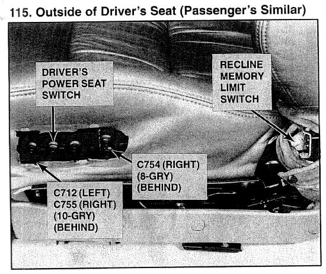

Operation CHARM
: Car repair manuals for everyone.
Home
>>
Acura
>>
1994
>>
Legend Coupe V6-3206cc 3.2L SOHC FI
>>
Repair and Diagnosis
>>
Body and Frame
>>
Mirrors
>>
Memory Positioning Systems
>>
Memory Positioning Switch
>>
Locations
Memory Positioning Switch: Locations

Outside Of Driver's Seat (Passenger's Similar)